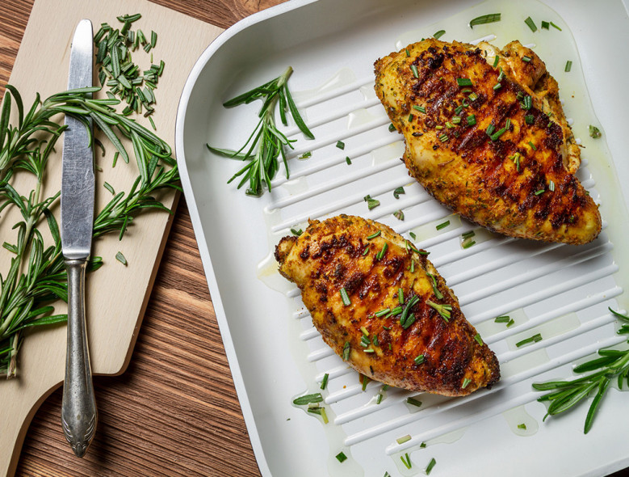

Rosemary
An aromatic and distinctive herb with a sweet, resinous flavor

A fragrant evergreen herb, Rosmarinus officinalis is a native of Mediterranean climates and happiest in hot, dry gardens. Rosemary is a cook's friend.
light_mode
Sun explosure
Full
water_drop
Water
Drought tolerant
straighten
Spread
48''
height
Height
48''-72''
today
Lifespan
Perennial
Tips for growing:
- Plant rosemary in spring once all chances of frost have passed.
- Space rosemary plants 2 to 3 feet apart in an area with abundant sunlight and rich, well-drained soil with a pH of 6.0 to 7.0.
- Before planting, set your garden up for success by mixing in several inches of aged compost or other rich organic matter into your native soil.
- Promote spectacular growth by feeding rosemary regularly with a water-soluble plant food.
- It’s important to water regularly but be sure to let the soil dry out between waterings.
- Harvest rosemary stems by snipping them with sharp gardening shears.

Recipe: Barbecued Rosemary Chicken
- In a nonmetallic bowl, stir together the oil, lemon zest, lemon juice, garlic, rosemary, salt, and pepper.
- Add the chicken, turning to coat. Cover and refrigerate for 30 minutes to 8 hours. If marinating for more than 30 minutes, turn several times.
- Lightly spray the grill rack with cooking spray. Preheat the grill on medium heat.
- Grill the chicken for 4 to 5 minutes on each side, or until no longer pink in the center. (The internal temperature should reach at least 165 degrees F). Transfer to plates.
- Meanwhile, in a small saucepan, whisk together the barbecue sauce, vinegar, and honey.
- Cook over medium-low heat for 3 to 4 minutes, or until heated through, stirring occasionally.
- Spoon the mixture over the cooked chicken.